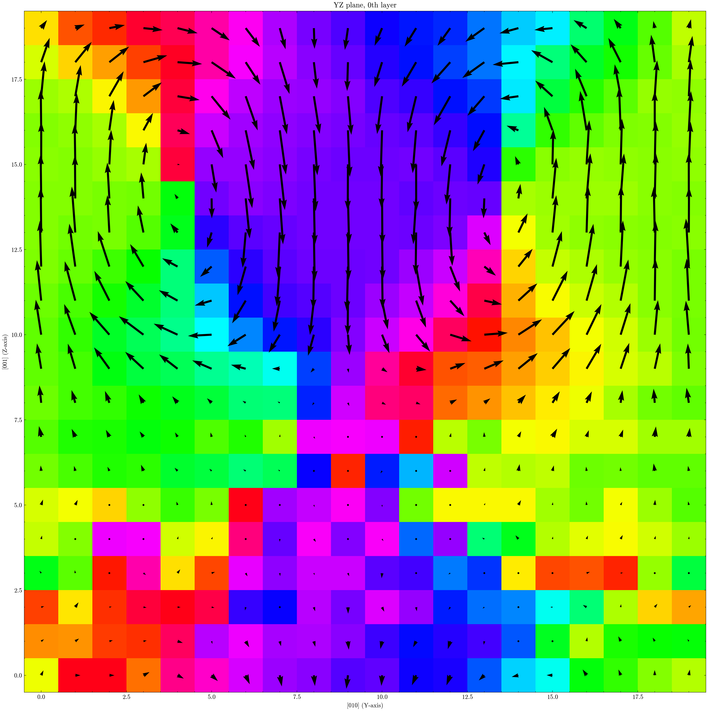

Example: PTO-STO Superlattice Polarization
This example computes and visualizes local polarization in a PbTiO3/SrTiO3 (PTO/STO) superlattice. For core concepts, see Introduction to ferrodispcalc.
Complete Script
from ase.io import read
from ferrodispcalc.neighborlist import build_neighbor_list
from ferrodispcalc.compute import calculate_polarization
from ferrodispcalc.vis import grid_data, plane_profile
atoms = read("stru.traj")
# Build neighbor lists
nl_bo = build_neighbor_list(atoms, ["Ti"], ["O"], cutoff=4, neighbor_num=6)
nl_ba = build_neighbor_list(atoms, ["Ti"], ["Pb", "Sr"], cutoff=4, neighbor_num=8)
# Averaged Born effective charges
z_a = 0.5 * (3.45 + 2.56)
z_b = 0.5 * (5.21 + 7.40)
z_o = -(z_a + z_b) / 3
bec = {"Pb": z_a, "Sr": z_a, "Ti": z_b, "O": z_o}
# Calculate and visualize
P = calculate_polarization(atoms, nl_ba, nl_bo, bec)
P_grid = grid_data(atoms, P, element=["Ti"], target_size=(40, 20, 20))
plane_profile(P_grid, save_dir="profile", select={"x": [0]})
{kind=link}

Local polarization on the YZ plane (x = 0) of a PTO/STO superlattice.
Step-by-Step Breakdown
Read the Structure
from ase.io import read
atoms = read("stru.traj")
Build Neighbor Lists
In a superlattice, the A-site is occupied by mixed species (Pb and Sr). The key difference from a pure perovskite: pass both species in the neighbor element list.
from ferrodispcalc.neighborlist import build_neighbor_list
# B-O: 6 neighbors (octahedral coordination)
nl_bo = build_neighbor_list(atoms, ["Ti"], ["O"], cutoff=4, neighbor_num=6)
# B-A: 8 neighbors — ["Pb", "Sr"] covers both A-site species
nl_ba = build_neighbor_list(atoms, ["Ti"], ["Pb", "Sr"], cutoff=4, neighbor_num=8)
Calculate Polarization
For a 50/50 PTO-STO superlattice, we average the BEC of each end member.
The oxygen charge is determined by charge neutrality: z_o = -(z_a + z_b) / 3.
from ferrodispcalc.compute import calculate_polarization
z_a = 0.5 * (3.45 + 2.56) # average of Pb(PTO) and Sr(STO)
z_b = 0.5 * (5.21 + 7.40) # average of Ti(PTO) and Ti(STO)
z_o = -(z_a + z_b) / 3 # charge neutrality
bec = {"Pb": z_a, "Sr": z_a, "Ti": z_b, "O": z_o}
P = calculate_polarization(atoms, nl_ba, nl_bo, bec)
P has shape (n_Ti, 3) — one polarization vector per B-site unit cell.
Visualize with a 2D Plane Profile
Grid the per-atom data onto a regular 3D lattice, then slice a 2D plane for plotting.
from ferrodispcalc.vis import grid_data, plane_profile
# Grid polarization onto a 40x20x20 mesh
P_grid = grid_data(atoms, P, element=["Ti"], target_size=(40, 20, 20))
# Plot the YZ plane at x=0
plane_profile(P_grid, save_dir="profile", select={"x": [0]})
plane_profile saves the figure to the specified directory. The select parameter
picks which slice(s) to plot — here we select the first layer along x.
See calculate_polarization(),
build_neighbor_list(),
and grid_data() for API details.